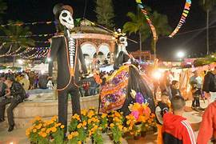
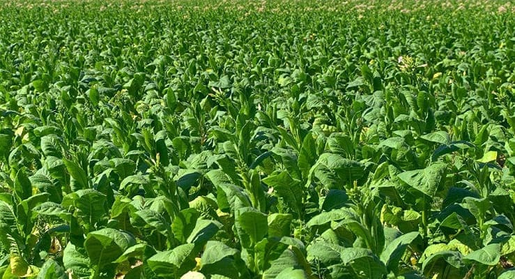

UBICACIÓN: Compostela está situada en el sur-centro del estado de Nayarit, México, y cuenta con una privilegiada ubicación que incluye acceso a la costa del Pacífico. Su clima tropical subhúmedo y monzónico lo convierte en un lugar ideal para disfrutar de la naturaleza y el turismo.
HISTORIA: Fundada en 1530 por Nuño Beltrán de Guzmán, Compostela fue originalmente conocida como Villa del Espíritu Santo de la Nueva Galicia. En 1540, Cristóbal de Oñate trasladó la ciudad al valle de Cactlán, donde se encuentra actualmente. Su nombre actual, Santiago de Compostela, fue adoptado en honor a la ciudad española del mismo nombre. Durante la época colonial, Compostela fue un importante centro administrativo y religioso, siendo sede del primer obispado de la Nueva Galicia en 1549.
FIESTAS: Compostela es conocida por sus festividades, como las Fiestas de la Santa Cruz, que se celebran en mayo y combinan eventos religiosos y culturales. Durante todo el año, se realizan actividades que resaltan las tradiciones locales, incluyendo música, danza y gastronomía.
PRODUCCIÓN: La economía de Compostela se basa en la agricultura, destacando el cultivo de tabaco y caña de azúcar. Además, el turismo costero es una fuente importante de ingresos, con playas como Chacala y Rincón de Guayabitos que atraen a visitantes por su belleza natural y actividades recreativas.
